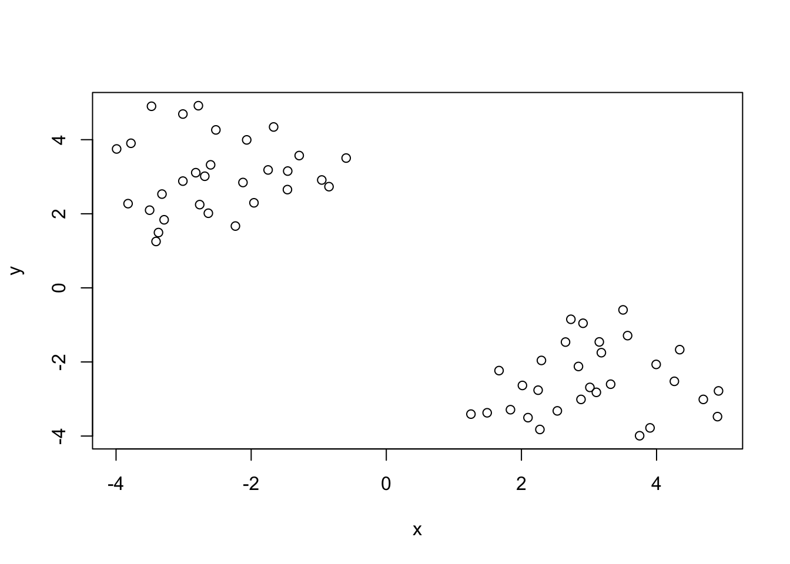
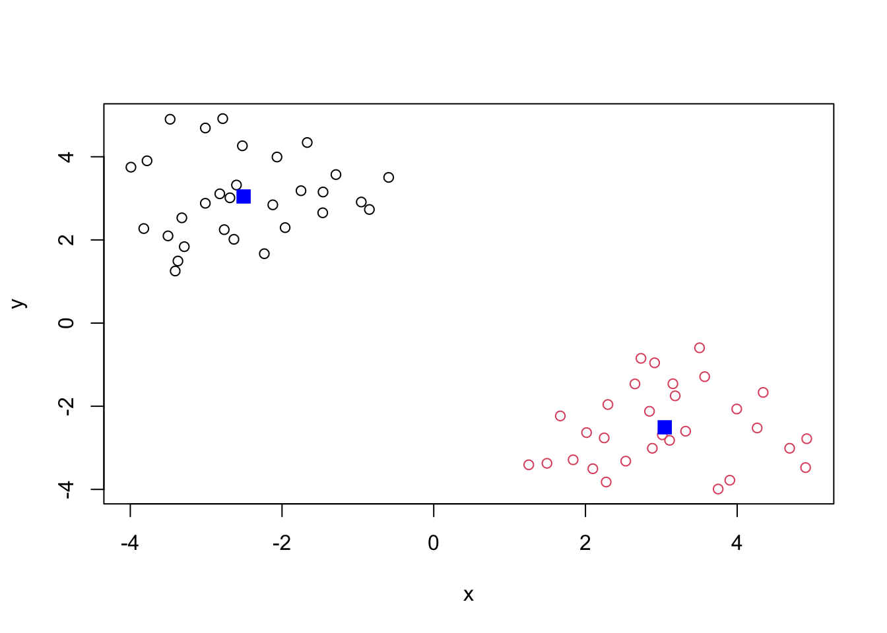
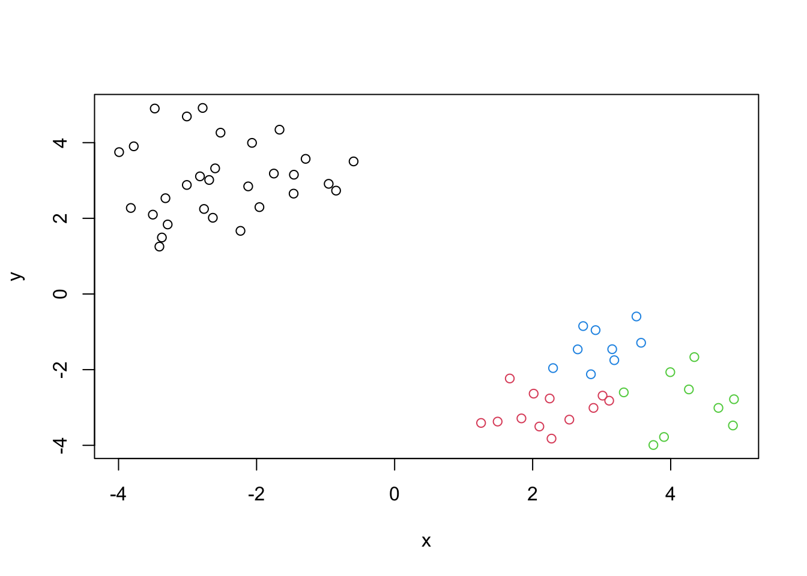
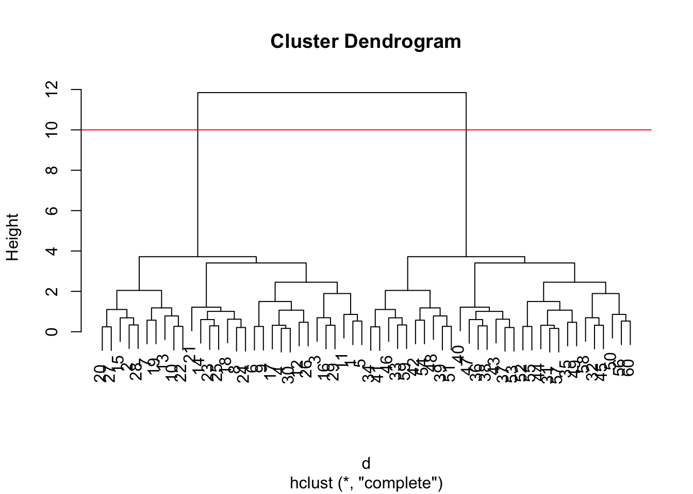
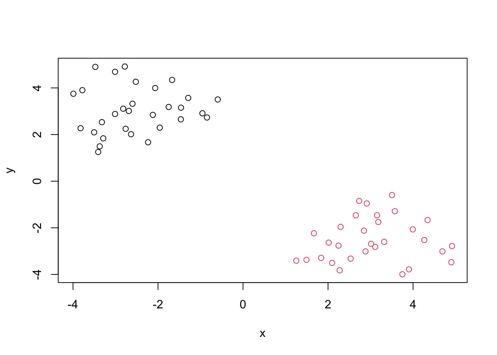
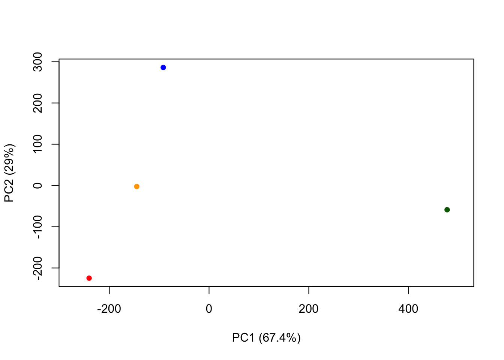

# To use rnorm: rnorm(num datapoints, mean = __, sd = ___)
tmp <- c(rnorm(30, mean=-3), rnorm(30, mean=3))Class 7: Machine Learning 1
Clustering Methods
Aim: find groupings (clusters) in your input dataset.
K means
K: Number of clusters
Let’s make up some data to cluster.
Make a vector, tmp, of length 60 with 30 points clustered around -3, and another 30 points clustered around +3.
I will now make a wee x and y dataset with 2 groups of points.
x <- cbind(x=tmp, y=rev(tmp))
wee <- plot(x)
k <- kmeans(x, centers=2)
kK-means clustering with 2 clusters of sizes 30, 30
Cluster means:
x y
1 -2.506548 3.044918
2 3.044918 -2.506548
Clustering vector:
[1] 1 1 1 1 1 1 1 1 1 1 1 1 1 1 1 1 1 1 1 1 1 1 1 1 1 1 1 1 1 1 2 2 2 2 2 2 2 2
[39] 2 2 2 2 2 2 2 2 2 2 2 2 2 2 2 2 2 2 2 2 2 2
Within cluster sum of squares by cluster:
[1] 54.49701 54.49701
(between_SS / total_SS = 89.5 %)
Available components:
[1] "cluster" "centers" "totss" "withinss" "tot.withinss"
[6] "betweenss" "size" "iter" "ifault" Q. From your result object
k, how many points are in each cluster?
k$size[1] 30 30Q. What “component” of your result object details the cluster membership?
k$cluster [1] 1 1 1 1 1 1 1 1 1 1 1 1 1 1 1 1 1 1 1 1 1 1 1 1 1 1 1 1 1 1 2 2 2 2 2 2 2 2
[39] 2 2 2 2 2 2 2 2 2 2 2 2 2 2 2 2 2 2 2 2 2 2Q. Cluster centers?
k$centers x y
1 -2.506548 3.044918
2 3.044918 -2.506548Q. Plot of our clustering results?
plot(x, col=k$cluster)
points(k$centers, col="blue", pch=15, cex=1.5)
What if we clustered this same data into 4 groups?
k4 <- kmeans(x, centers=4)
plot(x, col=k4$cluster)
A big limitation of kmeans is that it will use the number of centers you give it: even if this number of clusters doesn’t make sense.
Hierarchical Clustering
The base R function for Hierarchical Clustering is hclust(). Unlike kmeans(), you must calculate a distance matrix before you can pass your data as input.
kmeans()finds a distance matrix on its own (under the hood)
d <- dist(x)
hc <- hclust(d, method="complete")
hc
Call:
hclust(d = d, method = "complete")
Cluster method : complete
Distance : euclidean
Number of objects: 60 Use plot() to view results.
plot(hc)
abline(h=10, col='red')
Note that in the dendrogram, the height represents the magnitude of distance between two clusters.
To make the cut and get the cluster membership, we can use the cutree() function.
grps <- cutree(hc, h=10)
grps [1] 1 1 1 1 1 1 1 1 1 1 1 1 1 1 1 1 1 1 1 1 1 1 1 1 1 1 1 1 1 1 2 2 2 2 2 2 2 2
[39] 2 2 2 2 2 2 2 2 2 2 2 2 2 2 2 2 2 2 2 2 2 2Make a plot of our data colored by hclust results.
plot(x, col=grps)
Principal Component Analysis (PCA)
PCA is a method that reduces the dimensionality of features while only losing a small amount of information.
- in a sense, we visualize the data spread by viewing the data in the context of PC’s as the axes rather than the initial x and y axes
- PCA is a filtering method of sorts
PC1: First principal component
- variation in PC1 is always more significant than variation in PC2
PCA: Lab portion
Here we will do PCA on some food data from the UK.
Let’s read the UK foods data and find out the dimensions ### Q1
url <- "https://tinyurl.com/UK-foods"
x <- read.csv(url, row.names=1)
dim(x)[1] 17 4Preview the dataframe
head(x) England Wales Scotland N.Ireland
Cheese 105 103 103 66
Carcass_meat 245 227 242 267
Other_meat 685 803 750 586
Fish 147 160 122 93
Fats_and_oils 193 235 184 209
Sugars 156 175 147 139Q2
We could also have adjusted rownames and deleted the first column manually using x <- x[,-1] This approach is problematic because if you rerun it, you will keep trimming the dataframe and end up losing data (unless you reread the csv). It is better to read the csv with an argument to set rownames to column 1; this method is less destructive.
###Q3
Setting the beside= argument to false creates a single bar for each country.
barplot(as.matrix(x), beside=F, col=rainbow(nrow(x)))
Q5
In this plot, a point on the diagonal means that there is a match between the count of that category across 2 countries. This is confusing to interpret.
pairs(x, col=rainbow(10), pch=16)
Q6
The main difference in N. Ireland looks to be the blue and orange point categories since they differs more from the rest of the countries.
PCA to the rescue
The main base R function for PCA is called prcomp()
# Use the prcomp() PCA function
pca <- prcomp( t(x) ) # t(x) transposes the dataframe so the countries become the rows
summary(pca)Importance of components:
PC1 PC2 PC3 PC4
Standard deviation 324.1502 212.7478 73.87622 3.176e-14
Proportion of Variance 0.6744 0.2905 0.03503 0.000e+00
Cumulative Proportion 0.6744 0.9650 1.00000 1.000e+00Q. How much variance is captured by the first 2 PCs?
96.5%
PC1 is capturing 67.44% of the variation.
PC2 is capturing 29.05% of the variation.
PC3 is capturing 3.5% of the variation.
Q7, Q8
To make our main “PC score plot” or “PC1 vs PC2 plot” or “PC plot” or “Ordination plot”
attributes(pca)$names
[1] "sdev" "rotation" "center" "scale" "x"
$class
[1] "prcomp"We are after the pca$x result component to generate our main PCA plot
# Plot PC1 vs PC2
plot(pca$x[,1], pca$x[,2], xlab="PC1 (67.4%)", ylab="PC2 (29%)", xlim=c(-270,500), col=c('orange', 'red', 'blue', 'darkgreen'), pch=16)
#text(pca$x[,1], pca$x[,2], colnames(x), col=c('orange', 'red', 'blue', 'darkgreen'))Another important result from PCA is how the original variables (example: foods) factor into the PC scores.